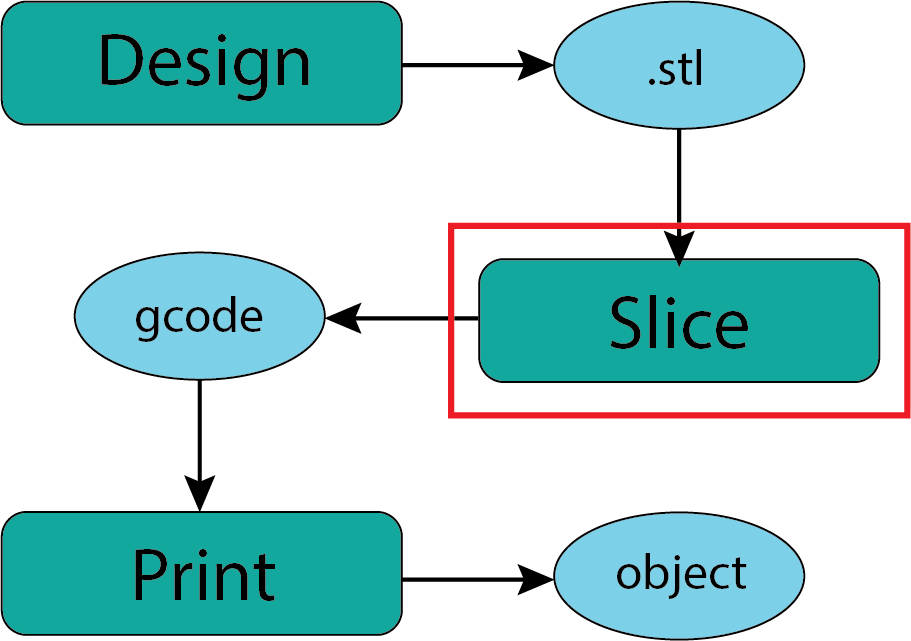
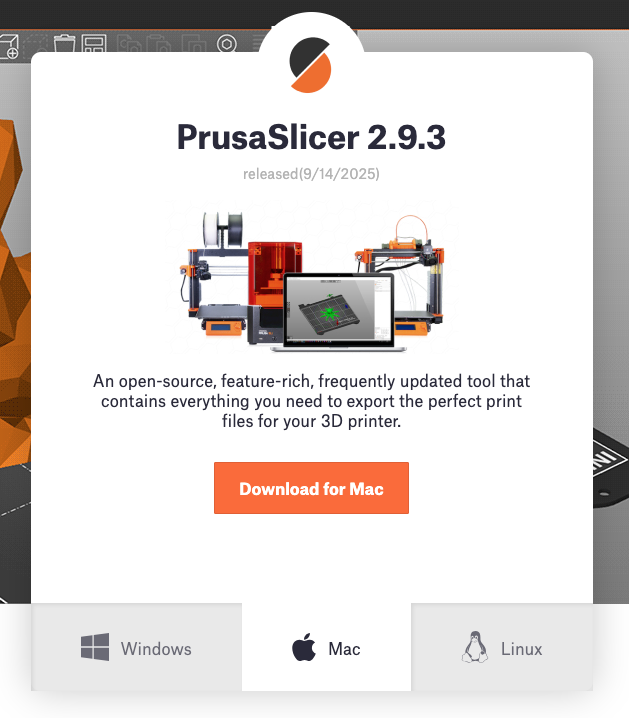
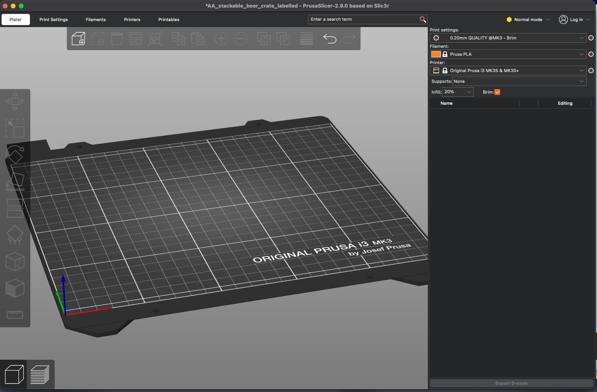
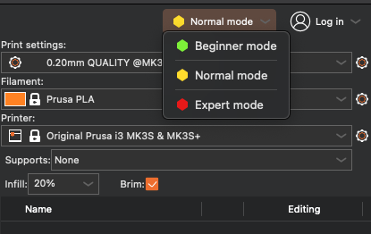
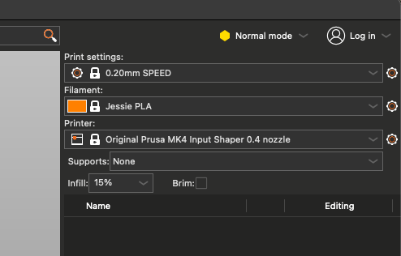
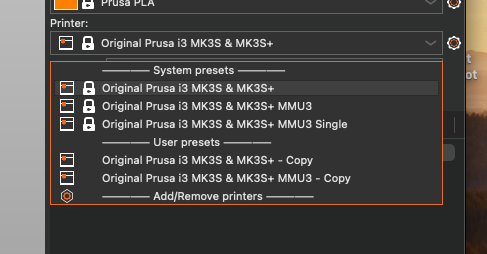
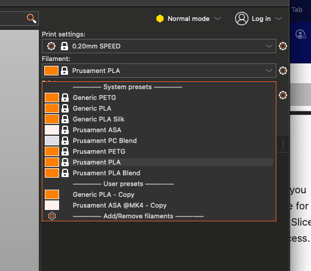
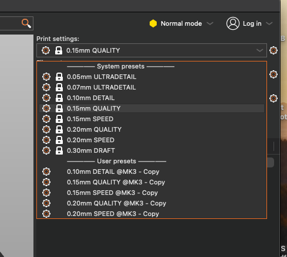

Slicer Overview#
{kind=link}

Fig. 19 Downloading .stl Files#
“Slicing” is the process of taking the output of a design process (usually an .stl file) and ‘slicing’ it into layers suitable for your target manufacturing process. In my experience this may be the most technically important step in the process of using the DPL Redmond Makerspace printers. Fortunately this is a process that you can perform on your own computer at home and we are delighted to provide support and guidance when you come into the makerspace.
Slicing Software:#
There are a range of slicer software packages. The options include Prusa Slicer, Ultimaker Cura, and Slic3r which are probably the 3 most common. If you can use one you can probably find your way around one of the others. I’m sure there are plenty of custom in house slicers for folks like the ones at Relativity and Creality. For a variety of reasons we will focus on Prusa Slicer which is open source, typical of all slicers, and well aligned with the printers we use in the makerspace.
Prusa Slicer#
Prusa Slicer is free and available to anyone and runs on all standard operating systens (Mac, Windows, and Linux). Our general recommendation would be to download and install the slicer software on your personal computer. We do have laptops available at the library with Prusa Slicer installed.
{kind=link}

Fig. 20 Downloading Prusa Slicer#
Once you have installed Prusa Slicer you will find helpful tutorial resources on the Prusa Slicer Support page Support materials at Prusa tend to be articles with embedded video to illustrate particular features or tasks. If you prefer article style tutorials this First Print with Prusa Slicer might work for you. If you are more of a video person here is a 20 min Prusa Beginner Tutorial from 3D Revolution that is also linked at the bottom of the MakerSpace page. There are many many others.
When you open Prusa Slicer for the first time you will need to do some set up (configuration) that is covered in the tutorials. Once that is done you’ll see a desktop that looks something like this (yours may look slightly different depending on the version and your operating system)
{kind=link}

Fig. 21 Prusa Slicer Desktop#
Prusa User Mode:#
In the very top right of the desktop is a dropdown menu identifying the “user mode”. If you are brand new to 3D printing we would recommend choosing the Beginner Mode. Be careful of the Expert Mode since it will permit you to do things that can damage the printer. Note: The names of these modes have changed over time but these are the current names.
{kind=link}

Fig. 22 Prusa Slicer User Mode#
In this presentation I am only going to highlight the three primary choices you will need to make in the slicer software to prepare your 3D model (from an imported .stl file).
The Big 3:#
In the top right corner of the desktop are the 3 primary choices you will need to make. There are many other choices you might make that will impact the success of the print but these 3 in the top right are the ones that can have large impacts.
{kind=link}

Fig. 23 Prusa Slicer Big 3#
Printer Choice#
Starting from the simplest choice which is the bottom of the 3 - which printer are you intending to use for your print. The one shown in the image is NOT the correct one for our printers. The options you have available will depend on how you configured Prusa Slicer. If the printer you wish to use is not on the dropdown menu revisit the configuration process. FOR OUR PRINTER LOOK FOR “Prusa MK4S 0.4 nozzle”
{kind=link}

Fig. 24 Prusa Slicer Printer#
Filament Choice:#
The second choice is also pretty straight forward which is to identify the filament you will be using. Slicer uses this to determine a variety of characteristics of the printer but most importantly the temperature of the hot end and the bed temperature. FOR OUR PRINTER LOOK FOR “Jessie PLA”. We may eventually offer other filaments but for now only PLA filaments will be available. You do not have to specify the color since that does not affect (generally) the performance of the printer.
{kind=link}

Fig. 25 Prusa Slicer Filaments#
Print Settings Choice:#
The choice of Print Settings is the one that will greatest impact on the characteristics of your print and the time it takes to complete the print. The thinner layers or the higher the detail/quality expectations the longer the print will take. Since you will need to complete any print in the makerspace while we are open (2-3 hrs maximum) these are the settings that will have the most impact on your ability to complete a print.
{kind=link}

Fig. 26 Prusa Slicer Print Settings#
Final Output: gcode#
The final output from the slicer software will be a gcode file that contains the machine specific code that is interpreted by the printer to execute the print. This gcode (the suffix of the file generated for our MK4S printers will be .bgcode) is then copied to a flash drive which is loaded onto the printer. Because the gcode is specific to each 3D printer we will be cautious as we verify that any gcode file you bring in is safe for our printers.